Platform as a Service (PaaS)
General features
Auto Scaling & Scaling-to-Zero
The PaaS services described in this document are designed to run on orchestrated, cloud-native platforms where horizontal auto scaling is a native capability. Auto scaling dynamically adjusts the number of active instances in response to application load so that services can absorb traffic peaks while avoiding unnecessary over‑provisioning during off‑peak periods.
At the platform level, an Horizontal Pod Autoscaler (HPA) or analogous controller continuously observes key metrics exposed by the workloads and the underlying infrastructure. These metrics commonly include CPU utilization, memory consumption, request rate, queue or backlog depth, and custom application indicators exported through standard monitoring interfaces. When the measured values exceed or fall below configured thresholds, the controller increases or decreases the replica count within the minimum and maximum limits defined for each service.
The same mechanism applies to many PaaS building blocks beyond purely stateless functions. These components can be configured to scale out when demand increases, distributing traffic across additional instances, and to scale in when demand subsides, consolidating activity on fewer instances. This behavior reduces the need for manual capacity planning, while still allowing organizations to define guardrails such as per‑tenant quotas, reserved capacity, or upper bounds imposed by licensing and compliance requirements.
For suitable workloads, several PaaS services also support scaling‑to‑zero. When a workload becomes idle and there are no active requests or tasks to process, the orchestration layer can progressively drain and stop all runtime instances associated with that service, leaving only the control and configuration plane active. In this state, compute capacity is released instead of being reserved for an idle service, which reduces the operational surface exposed to potential threats and improves infrastructure utilization. When new load arrives after a scale‑to‑zero phase, the platform automatically recreates the necessary runtime instances and starts routing work to them as soon as they become healthy; this can introduce a controlled start‑up latency, which can be mitigated for latency‑sensitive services by configuring a small minimum number of always‑on instances.
Scaling‑to‑zero applies to workloads whose runtime instances can be stopped while still meeting durability and availability requirements. State‑heavy services such as relational databases, message brokers, and some analytics engines typically maintain at least one active replica or a minimal cluster footprint to guarantee durability, failover, and predictable performance characteristics. For these services, elasticity is achieved through controlled horizontal scaling of nodes, vertical tuning of resource allocations, and scheduled maintenance windows, with the serving tier remaining continuously available.
In all scenarios, auto scaling integrates with the platform’s monitoring, logging, and governance capabilities. Scaling events are traceable, auditable, and can be correlated with business and security metrics to validate that capacity changes remain compliant with corporate policies.
Security Patching
Security patching is part of the Vulnerability Management (VM) process and concerns the operational activities involved in applying software updates (called patches or fixes) designed to resolve security vulnerabilities found in operating systems, applications, firmware, or other IT components.
In practice, security patching:
- fixes security flaws that could be exploited by attackers.
- improves system stability and reliability.
- reduces the risk of attacks such as malware, ransomware, or unauthorized access.
These activities are carried out according to established schedules (Periodic VM) or as a result of risk analyses, internal/external alerts, or specific needs in response to urgent patches (such as emergency patches or zero-day patches), i.e., non-periodic (on-demand) VM.
The VM process pursues the following objectives:
- identifying and assessing potential weaknesses (vulnerabilities) in the technological infrastructure.
- verifying compliance with security standards and corporate policies.
- checking the robustness of networks, systems, or applications against the possibility of exploitation by new cyber threats. evaluating the effectiveness of remediation actions taken to improve the security of systems, networks, or applications.
The Security Operation Center (SOC) manages the VM process by performing the following activities:
- defines the scope of Vulnerability Management activities.
- contributes to planning the activities.
- relays any alerts or warnings from external or internal sources.
- analyzes the reports produced by the SOC.
- validates the remediation plan.
The SOC, for its part, performs the following operational activities:
- collects vulnerability alerts from both internal and external sources.
- gathers information about the affected assets.
- plans, together with the CISO, security assessments aimed at identifying the technological perimeter subject to VM.
- carries out VA/PT activities and prepares the related reports.
The phases of the vulnerability management process are:
a) Planning b) Execution of activities c) Definition of the remediation plan d) Implementation of the remediation plan e) Monitoring
In the specific case of PaaS services provided on the Kubernetes cluster, VM and security patching activities make use of the StackRox tool. StackRox is the solution used to verify container security, providing capabilities to identify critical vulnerabilities in managed StackRox environments and supporting the processes of checking, monitoring, and correcting identified security issues:
- Vulnerability Management
- Network Segmentation
- Compliance
- Detection and Response
Replication
The protection of data integrity and availability within the PaaS platform is ensured by integrating the Kubernetes cluster with a centralized backup service delivered through a Veeam solution.
To integrate Veeam with Kubernetes clusters, the Veeam architecture must include a Media Agent responsible for executing the actual backup of the K8S cluster. Backup operations are performed through APIs exposed by the K8S infrastructure.
The Kubernetes objects subject to backup are:
- the distributed etcd database hosted on the master nodes.
- the Persistent Volumes (Block & File Storage) provided by the Ceph service.
Given the criticality of the etcd database - which manages and stores the state and configuration of all objects within K8S - its backup is performed at a very high frequency (several times per hour).
Furthermore, for certain types of applications (e.g., PostgreSQL databases) running on the K8S platform, achieving Application-Consistent backups requires integrating pre/post-backup scripts.
These scripts place the application in a “quiesce” (read-only) state for the duration of the volume snapshot, and then perform an “unquiesce” operation to restore normal read-write activity.
The Veeam backup platform allows the configuration of these pre/post scripts for each application requiring this approach to ensure Application-Consistent backup execution.
Disaster Recovery
The PaaS platform leverages the multi-region, multi-availability-zone infrastructure of Leonardo Cloud Everywhere to support disaster recovery strategies at both the infrastructure and application level.
The underlying architecture is organized into three geographically distributed Regions, each composed of three Availability Zones hosted in physically separate Data Centers. Within a Region, the Availability Zones are interconnected through a dedicated high-throughput, low-latency backbone that supports synchronous data replication across the tri-site storage configuration. Across Regions, asynchronous replication is available over dedicated interregional backbones, enabling recovery scenarios while maintaining data sovereignty within Italian territory.
List of services
The following table lists the services included in the Platform as a Service (PaaS) category.
| FAMILY | SERVICES |
|---|---|
| Security | • Identity & Access Management (IAM) Service • Key Vault as a Service - Standard • Endpoint Protection • NGFW Platform |
| Middleware | • PaaS API Management • Functions As A Service (FAAS) |
| Infra & Ops Platform | • IT Infrastructure Service Operations (Logging & Monitoring) |
| DevSecOps | • DevSecOps As A Service • Qualizer DevSecOps |
| Big Data | • Data Lake • Data Platform • Business Intelligence Platform • Event Message |
| Artificial Intelligence (AI) | • AI Platform |
| Database | • PaaS SQL - PostgreSQL • PaaS In Memory - Redis |
| Networking | • PaaS Domain Name System (DNS) |
Security Family
Below is the list of services belonging to the Security family:
- Identity & Access Management Service
- Key Vault as a Service - Standard
- End point protection
- NGFW Platform
Identity & Access Management (IAM) Service

Service Description
The Service, developed by Leonardo, provides an essential level of security for identity and access management, ensuring foundational protection against unauthorized access.
It manages single sign-on access to guarantee access to all protected resources with a single authentication. It supports standard OIDC/OAUTH and SAML protocols for easy integration with applications and products.
It enables first-level authentication with username/password and second-level authentication with multi-factor authentication based on Time-based One-Time Password (TOTP) protocols.
It manages access authorization to system-protected resources only for users with rights to use them according to the Role-based Access Control (RBAC) and Attribute-based Access Control (ABAC) paradigms. Integration with external user repositories (LDAP or Active Directory) is also available.
It manages the user lifecycle and related authorizations via the console.
The service is offered with the following unit metric: 100 concurrent users.
Features and Advantages
The main features and functionalities of the service are:
-
Identity Management
-
User Management → creation, modification, and deletion of users; management of user profiles (name, email, custom attributes, roles, etc.); import/export of users from external directories (LDAP, Active Directory).
-
Identity Federation → integration with external providers via LDAP or Active Directory; two-way or one-way synchronization of users and roles.
- Account Management UI → self-service portal for users to update profiles and passwords, manage devices and active sessions, and view permissions.
-
-
Access Management
- Single Sign-On (SSO) / Single Logout (SLO).
- Multi-Factor Authentication (MFA).
- Delegated Authentication (Identity Brokering).
- Role-Based Authorization (RBAC) and policies.
-
Protocol and Integration
- Support for standard protocols, such as OpenID Connect (OIDC), OAuth 2.0, and SAML 2.0.ì
- Ability to integrate with API Gateways, microservices, and web frontends.
-
Security and Management
- Session and Token Management.
- Password Policies.
- Events and Auditing.
- Scalability and High Availability → distributed architecture, with support for clustering and replication.
-
Extensibility
- REST API for automated user, role, and client management.
- SPI (Service Provider Interfaces) for extending authentication, validation, or provisioning capabilities.
- Ability to implement custom authenticators or connect to external systems.
Single Pane of Glass
The Identity & Access Management (IAM) service provides a Single Pane of Glass that centralizes identity and access control across the platform. A unified console enables administrators to manage identity lifecycle, roles and authorization policies, authentication requirements (including MFA), and federation with external directories such as LDAP and Active Directory.
Applications and services can be integrated using standard protocols (OIDC, OAuth2, SAML2), while sessions and tokens are centrally monitored and controlled. The platform applies security and governance policies consistently across all PaaS resources, ensuring a streamlined, coherent, and cloud-native IAM management experience.
The service offers the following advantages:
- Improved overall security → Centralizing authentication reduces the risk of vulnerabilities distributed across applications.
- Reduced maintenance and development costs → A single, centralized platform reduces the complexity and duplication of authentication code across applications.
- Agility and Scalability → Increased speed of onboarding new applications thanks to the use of standard protocols (OIDC, SAML, OAuth2).
- Maintainability and Standardization → Use of standard protocols (OIDC, SAML, OAuth2) that eliminate proprietary implementations and facilitate interoperability.
Key Vault as a Service - Standard
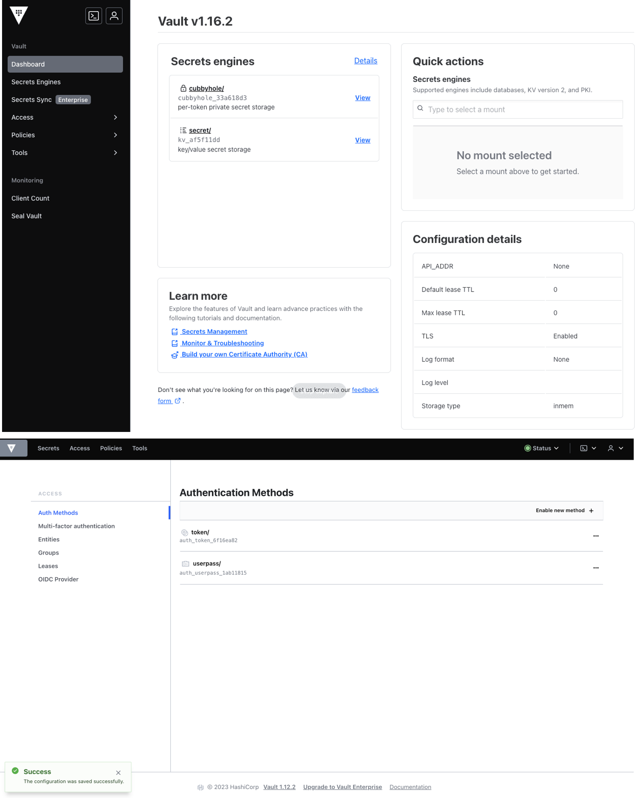
Service Description
The service, based on Hashicorp Vault technology, provides a secure cloud repository (Vault) for storing and managing credentials and passwords used by cloud applications without having to manually install and manage dedicated IaaS machines.
The service consists of a software platform that enables centralized and automated management of encryption keys, secrets, and certificates, with access controlled by identity-based authentication and authorization methods.
It also allows organizations to significantly simplify key lifecycle management, ensuring centralized control while leveraging the native cryptographic capabilities of KMS providers.
The service is offered with the following unit metric: 500 clients.
Features and Advantages
The main features and functionalities of the service are:
- Secure Secret Storage → Key/value secrets are stored in Key Vault As A Service in encrypted form, ensuring their integrity in the event of unauthorized access to raw storage.
- Dynamic Secrets → Key Vault As A Service can generate secrets on demand to allow users and/or applications to access different systems.
- Data Encryption → Key Vault As A Service can encrypt and decrypt workloads running on the customer infrastructure without archiving them, managing the entire lifecycle of the cryptographic material used in the encryption process.
- Leasing and Renewal → Key Vault As A Service associates a lease with each key or secret managed, which will result in its automatic revocation upon expiration and which can be renewed by clients through the integrated APIs provided by the platform.
- Revocation → Key Vault As A Service has integrated support for revoking keys and secrets, which can be revoked individually or in bulk (e.g., all keys of a specific user), for example in case of compromise.
The service offers high availability and geographic replication.
The main workflow of Key Vault as a Service consists of four phases:
- Authentication → The process by which a client provides information that Key Vault as a Service uses to determine the authenticity of the requester. Once the client is authenticated, the system generates a token that is associated with the relevant policy.
- Validation → Validation occurs through trusted third-party sources, such as Active Directory, LDAP, and Okta.
- Authorization → The client is then associated with the Key Vault as a Service security policy, which consists of a set of rules that define which API endpoints a user, machine, or application is allowed or denied access to with its token.
- Access → Key Vault as a Service then grants access to keys and encryption features, secrets, and certificates.
The service offers the following advantages:
- Risk reduction → thanks to automatic key rotation and secret lifecycle management, it increases the protection of sensitive data, simplifies regulatory compliance and reduces the risk of human errors.
- Operational efficiency and cost reduction → less internal management, automation and standardization, scalability without hardware investment.
- Optimized time-to-market → developers focus on code, not key management; also enables secure applications to be delivered faster, improving agility and innovation.
- Improved trust and reputation → audit and traceability to demonstrate secure secret management to stakeholders or customers.
- Cryptographic and standardized compliance → can be configured to use FIPS (Federal Information Processing Standards) validated cryptographic modules, ensuring that all encryption, signing, HMAC and key derivation operations comply with the standards.
Endpoint Protection Service
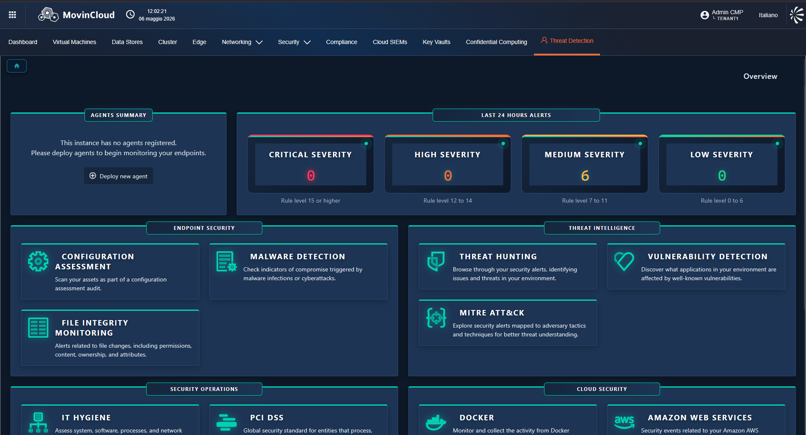
Service Description
Powered by Wazuh technology, the Endpoint Security Monitoring Service provides centralized security monitoring, threat detection, vulnerability assessment, and compliance monitoring for endpoint devices, servers, and workloads.
The service delivers a cloud-based, scalable, and centrally managed security monitoring platform capable of collecting, correlating, and analyzing security events from distributed endpoints. By combining host-based intrusion detection, file integrity monitoring, vulnerability detection, and log analysis, the service enhances visibility across the organization's infrastructure and enables proactive identification of security risks.
The service is delivered as a managed PaaS solution, offering continuous security monitoring, centralized visibility, and simplified administration for organizations seeking advanced endpoint security monitoring capabilities without the overhead of managing on-premises security infrastructures.
The service is offered with the following unit metric: 100 monitored endpoints.
Features and Advantages
The Endpoint Security Monitoring Service offers a comprehensive suite of integrated security functions aimed at ensuring endpoint visibility, compliance, and threat detection across the organization:
- Security event collection and log analysis → centralized collection, normalization, and analysis of security events, system logs, application logs, and audit records from monitored endpoints.
- Host-based intrusion detection (HIDS) → continuous monitoring of endpoints to detect suspicious activities, unauthorized changes, and potential security breaches.
- File integrity monitoring (FIM) → tracks modifications to critical files, configurations, and system resources, generating alerts when unauthorized changes are detected.
- Vulnerability detection and assessment → continuously identifies known vulnerabilities and missing security updates across monitored systems, enabling risk prioritization and remediation planning.
- Security configuration assessment → evaluates endpoint configurations against security best practices and compliance benchmarks, helping organizations maintain secure system configurations.
- Threat detection and correlation → correlates events from multiple sources to identify attack patterns, indicators of compromise (IoCs), and suspicious behaviors.
- Compliance monitoring → supports security and regulatory frameworks by continuously assessing monitored systems against predefined compliance requirements.
- Centralized management console → provides unified visibility and control over monitored endpoints, enabling policy management, alert handling, investigation, and reporting from a single interface.
- Integration with SIEM, SOC, and XDR platforms → enables advanced security monitoring, incident investigation, and orchestration through integration with existing security ecosystems.
The main components of the service are:
- Wazuh Agent → a lightweight agent installed on monitored endpoints that collects security events, system information, file integrity data, and vulnerability information.
- Wazuh Management Server → central component responsible for receiving, processing, correlating, and managing security data collected from endpoint agents.
- Indexer and Analytics Engine → stores, indexes, and analyzes security events, enabling efficient searches, dashboards, and long-term event retention.
- Management and Monitoring Console → centralized administrative interface providing visibility into alerts, vulnerabilities, compliance status, and endpoint security posture.
- Vulnerability Detection Module → continuously evaluates monitored assets against vulnerability databases and identifies security weaknesses.
- File Integrity Monitoring Module → monitors critical files and system resources for unauthorized modifications.
- Compliance Monitoring Module → evaluates systems against security policies and compliance frameworks.
- Event Correlation and Alerting Engine → analyzes security events across the environment, correlating data to identify anomalies and generate actionable alerts.
- Integration and API Layer → enables interoperability with SIEM, SOC, IAM, ticketing, and orchestration platforms.
The service offers the following advantages:
- Centralized security visibility → provides unified monitoring and security event analysis across all managed endpoints from a single platform.
- Continuous threat detection → enables real-time identification of suspicious activities, policy violations, and indicators of compromise.
- Vulnerability and risk management → continuously identifies vulnerabilities and misconfigurations, supporting remediation prioritization and risk reduction.
- Compliance and audit readiness → facilitates adherence to security standards and regulatory requirements through continuous monitoring and reporting.
- Reduced operational complexity → centralizes monitoring, analysis, and management activities, simplifying security operations.
- Scalable architecture → supports distributed environments ranging from small infrastructures to large enterprise deployments.
- Integration with security ecosystems → enables seamless integration with SIEM, SOC, XDR, IAM, and ticketing platforms for coordinated security operations.
- Comprehensive endpoint visibility → provides detailed insights into endpoint activity, configuration changes, security events, and system health.
- Automated alerting and incident investigation → accelerates threat identification and investigation through event correlation and actionable alerts.
- Advanced reporting and analytics → offers customizable dashboards, compliance reports, and security analytics to support operational and governance requirements.
NGFW Platform
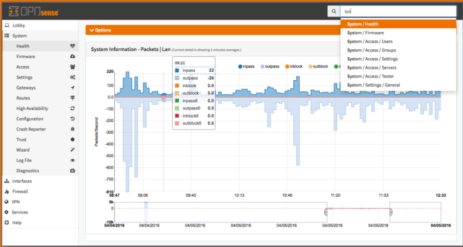
Service Description
The Next-Generation Firewall (NGFW) service, based on OPNsense technology, implements a firewall application system to manage inbound and outbound traffic flows.
The platform includes all the advanced features of a firewall with additional threat detection capabilities based on artificial intelligence and machine learning.
The device is also capable of analyzing the content of network packets, down to the application layer (deep packet inspection), and managing rules based on more than just ports and protocols.
The service delivers intelligent traffic inspection, application-aware control, intrusion prevention, and threat detection across cloud, on-premise, and hybrid infrastructures. Unlike traditional firewalls that rely solely on port and protocol filtering, the NGFW PaaS incorporates deep packet inspection (DPI), machine learning-based threat analysis, and context-aware security policies to identify and mitigate sophisticated attacks, including malware, ransomware, zero-day exploits, and data exfiltration attempts.
The service is offered with the following unit metric: 1 Gbps of Throughput.
Features and Advantages
The main features and functionalities of the service are:
- Intrusion prevention system (IPS) → provides signature-based and behavior-based detection to prevent known and unknown exploits. Protects against buffer overflows, SQL injection, cross-site scripting, and command injection attacks. Continuously updated with global threat intelligence feeds.
- Virtual Private Network (VPN) and secure remote access → provides site-to-site and remote access VPN with AES-256 encryption. Supports IPsec, SSL, and hybrid VPN tunnels for secure communication. Integrates with multi-factor authentication (MFA) for secure user access.
- Logging, monitoring, and analytics → real-time visibility into network traffic, user activity, and threat events. Integrated dashboards and customizable reports for compliance and auditing. Supports integration with SIEM/SOAR platforms for advanced analytics and incident response.
- High availability and scalability → redundant architecture ensuring failover, session synchronization, and minimal downtime. Auto-scaling capabilities to handle fluctuating workloads and peak network demand. Supports multi-zone and multi-region deployment for resilience and disaster recovery.
The main components of the service are:
- Web filtering and URL categorization / Web and email security → filters Web traffic by category, blocks or limits access to malicious or unauthorized sites (HTTP/HTTPS proxy, URL filtering/blacklist).
- Firewall enforcement nodes / Stateful firewall, policy-based filtering, support VLAN, NAT, port forwarding, etc.
The service offers the following advantages:
- Enhanced cyber resilience → provides continuous protection against advanced cyber threats, ensuring business continuity and minimizing the risk of network downtime, data loss, or reputational damage.
- Regulatory compliance and risk reduction → simplifies compliance with major cybersecurity frameworks by enforcing standardized policies, secure configurations, and comprehensive audit logging.
- Operational efficiency and cost optimization → delivered as a managed PaaS, the service eliminates the need for dedicated hardware, manual updates, and specialized maintenance, significantly reducing operational costs.
- Scalable and flexible network protection → cloud-native design enables dynamic scaling according to traffic demand, ensuring consistent performance across hybrid and multi-cloud environments.
- Accelerated security modernization → enables organizations to transition from legacy firewalls to a modern, intelligent, and centrally managed security platform without downtime or complex migrations.
- Improved Visibility and Governance → consolidates monitoring and policy control across distributed environments into a single interface, empowering governance, risk, and compliance teams.
- Faster incident response → automated detection and orchestration reduce the time to identify and mitigate attacks, minimizing business impact and resource overhead.
- Business continuity and resilience → redundant and geo-distributed infrastructure ensures uninterrupted protection and service availability even during outages or attacks. Support for digital transformation initiatives → enables secure adoption of cloud services, remote access, and IoT solutions by integrating network security directly into cloud workflows.
- Comprehensive layered protection → combines firewall, intrusion prevention, antivirus, web filtering, and sandboxing into a unified, multi-layered security stack. Application and user awareness → identifies and controls applications and users regardless of port, protocol, or encryption, ensuring contextual, identity-based access control.
- Deep Packet Inspection (DPI) → examines every packet in real-time to detect encrypted or obfuscated threats, ensuring accurate threat identification and minimal false positives.
- AI-Driven threat detection and prevention → uses artificial intelligence, behavioral analytics, and threat intelligence feeds to detect zero-day attacks, ransomware, and polymorphic malware.
- Centralized Policy Management → provides unified control of security rules, compliance baselines, and configurations across all NGFW instances through a single management console.
- Real-Time analytics and reporting → offers comprehensive visibility into traffic patterns, security events, and policy compliance, with exportable reports for auditing and SOC integration.
- High availability and elastic scalability → implements active-active clustering, load balancing, and autoscaling to maintain performance and fault tolerance under varying network loads.
- Zero Trust and microsegmentation support → enforces least-privilege access and segmentation at the application, user, and workload level to contain breaches and minimize lateral movement.
- Integration with security ecosystem → seamlessly connects with SIEM, SOAR, CSPM, and IAM platforms for unified threat management, incident response, and automation workflows.
- Secure VPN and remote access → delivers site-to-site and user-based VPN capabilities with strong encryption and MFA integration for secure remote connectivity.
- Automated policy enforcement and updates → automatically distributes updated rules, signatures, and threat intelligence across all firewalls, ensuring continuous protection with minimal manual effort.
- Robust logging, monitoring, and auditability → maintains detailed, immutable logs for compliance, forensics, and real-time incident response, ensuring full visibility and traceability.
- Support for multi-tenant and hybrid environments → designed for organizations and service providers managing multiple clients or business units with logical separation and delegated administration.
Middleware Family
Below is the list of services belonging to the Middleware family:
PaaS API Management


Service Description
Based on Kong solution, it is a platform of tools and services that facilitates the management, control, monitoring, and protection of APIs (Application Programming Interfaces) without having to manually implement all the components. The service typically offers:
- API gateways to route and secure traffic;
- Authentication and authorization: Rate limiting and throttling to control consumption;
- Logging and observability: Integration with security and DevOps systems.
The API manager facilitates API lifecycle management, including aspects such as creation, version management, deprecation, and retirement, to ensure backward compatibility, allowing developers to gradually migrate to new versions without disrupting existing applications.
The API manager allows you to define and enforce policies, such as usage limits, quota management, custom authentication, data transformations, and caching. These policies allow you to control API behavior and ensure compliance with security requirements and guidelines.
The API Manager can integrate with other systems and tools, such as identity and access management (IAM) systems, performance monitoring systems, data analytics systems, and security gateways. This integration expands the API Manager's functionality and integrates it into the ecosystem of existing applications and services.
The service is offered for a unit size of 500 M of API requests.
Features and Advantages
The main features and functionalities of the service are:
- API Publishing → the API Manager offers tools for publishing APIs, allowing developers or authorized users to access them. For optimal use, clear and comprehensive documentation is provided describing how to use the APIs, which endpoints are available, which parameters are requested, and how to interpret the responses.
- Access Control → the API Manager manages the authentication and authorization of users who wish to use the APIs. This allows you to control who can access the APIs and with what permission levels. The API Manager can adopt authentication mechanisms such as access tokens, API keys, or digital certificates to ensure API security.
- Monitoring and Analytics → the API Manager offers tools for monitoring API performance, such as the number of requests, response times, and errors. This information allows developers and administrators to monitor API usage, identify any performance issues, and take corrective action.
The architecture, based on Kong technology, is divided into several key components that interact to provide comprehensive functionality to users:
- Front-end → administration clients and graphical interfaces (Admin GUI, Dev Portal) accessible via browser or dedicated applications, which allow users to configure services, manage users, and monitor metrics in real time.
- Back-end Kong Control Plane → manages configurations, policies, plugins, and API orchestration.
- Back-end Data Plane → routes user requests to back-end services, applying security rules, transformations, caching, and rate limiting. - Database → stores configurations, users, roles, statistics, and logs. Supports replication and high availability capabilities to ensure resilience and business continuity
- Integrations → supports integrations with development tools, CI/CD, monitoring systems, and project management platforms, allowing Kong to be incorporated into existing enterprise workflows.
- Security and Authentication → offers advanced security options, including multi-factor authentication, support for enterprise protocols (OIDC, SAML, LDAP), and granular access control, ensuring data protection and compliance with corporate standards.
The service offers the following advantages:
- Reduced time to market → APIs can be published and managed quickly without building the infrastructure from scratch.
- Flexibility and scalability → the platform grows with business needs, supporting traffic spikes or new integrations without disruption.
- Reduced operating costs → no hardware or maintenance investments: infrastructure management is delegated to the PaaS provider.
- API monetization → ability to create API-driven business models (e.g., exposing APIs to partners or customers with pricing plans).
- Enhanced security and compliance → secure management of APIs and traffic between services, with authentication, authorization, and rate limiting policies, protecting the infrastructure from unauthorized access.
- Open ecosystem → Facilitates partnerships and innovation thanks to an API-ready and standardized infrastructure.
Functions as a Service (FAAS)
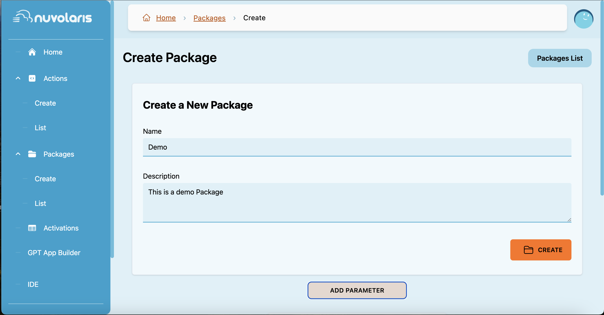
Service Description
FaaS (Function as a Service) is an event-driven system design model running on stateless containers based on the Nuvolaris platform, where developers create, deploy, and execute small, independent functions to accomplish specific tasks without having to worry about the underlying infrastructure.
Adopting FaaS allows for standardization of application development and execution by centralizing cross-functional capabilities such as orchestration, automatic provisioning, monitoring, integrated service management, and event-driven flow control.
It offers tools to:
- centrally manage serverless functions;
- automate component lifecycle management.
The FaaS platform provisions and scales the underlying resources based on demand. It is ideal for highly dynamic scenarios with variable workloads and integrates seamlessly with microservices and event-based architectures.
The service is offered with the following metrics: 100 VCPUs.
Features and Advantages
The service goes beyond simply providing an execution engine; it also offers a complete ecosystem, consisting of:
- Serverless execution → stateless functions and event-driven workflows, scalable and available in various programming languages.
- Portability and independence → can run on any Kubernetes cluster, across multiple environments, without lock-in constraints.
- Security and compliance → data protection and centralized access management.
- The solution enables organizations to adopt a modern and flexible model, reducing operational complexity and benefiting from a standardized and easily accessible service.
The service is delivered through Apache OpenServerless, an open-source, cloud-agnostic serverless platform based on Apache OpenWhisk as a Function-as-a-Service (FaaS) engine.
The service offers the following advantages:
- Reduced operating costs → you only pay for the actual use of features.
- Flexibility and scalability → resources adapt to demand.
- Operational efficiency → eliminating the need to directly manage servers, patches, and updates.
- High availability → built-in redundancy and fault tolerance, ensuring high availability of features even in the event of hardware failures or other interruptions.
- Accelerated time-to-market → rapid release of new features without worrying about the infrastructure.
- Agile development → focus on code and business logic, not server management.
- Continuous innovation → rapid experimentation with new, low-cost services. Competitive advantage in cost and speed compared to traditional hosting models.
Infra & Ops Platform Family
Below is the list of services belonging to the Infra & Ops Platform family:
IT infrastructure Service Operations (Logging & Monitoring)
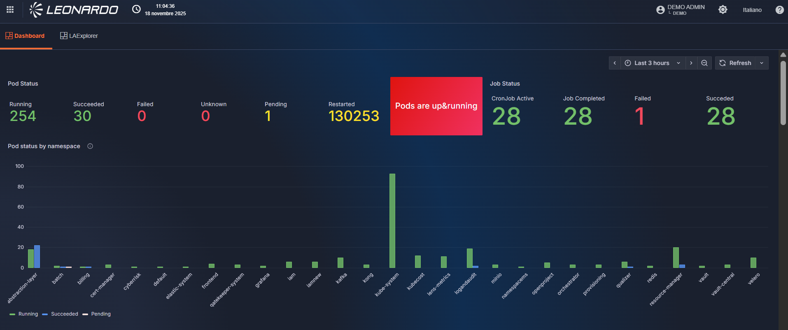
Service Description
Developed by Leonardo, this is an Application Performance Monitoring (APM) service that monitors and controls infrastructure performance supporting applications (e.g., latency, errors, service availability) and workloads deployed in the Cloud environment.
It provides centralized collection and analysis across various infrastructure elements: Servers and VMs, Containers and orchestrators, Cloud providers, and Network.
The service is offered per 1 GB of data storage.
Features and Advantages
The Log & Audit service built on OpenTelemetry provides a unified and vendor-neutral way to collect, process, and export observability data. Its core capabilities include:
The service offers the following main features:
- Log collection & aggregation → vaptures application logs, system logs, and security-relevant audit trails. Supports structured logging for consistent and machine-readable data.
- Audit trail generation → tracks user actions, configuration changes, and security-sensitive operations. Ensures immutability and integrity through standardized data formats and export pipelines.
- Distributed tracing → enables end-to-end traceability across microservices. Helps correlate logs, metrics, and traces for full-context auditability.
- Metrics and performance data → collects operational and performance metrics (CPU, memory, network, API latency). Correlates metrics with logs and traces for accurate diagnostics.
- Policy-driven data processing → allows filtering, sampling, redaction, and enrichment through OpenTelemetry Collectors. Ensures sensitive information is processed according to compliance policies.
- Multi-destination export → exports data to SIEM platforms, log analytics tools, data lakes, or object storage. Supports Elasticsearch, Splunk, Loki, BigQuery, and more.
The main components of the service are:
- Instrumentation Layer → applications and services instrumented using OpenTelemetry SDKs and auto-instrumentation agents. Generates logs, metrics, and traces in a standardized OTLP format.
- OpenTelemetry collector → central component responsible for: receiving data (logs, metrics, traces); processing/enriching it; exporting it to one or more backends.
Can run as: a sidecar in Kubernetes, a daemonset on each node, a centralized collector cluster. - Export & storage layer → observability and security data coud be sent to: log storage (Elasticsearch, Loki, Cloud logging platforms); SIEM systems (Elastic SIEM, Splunk, Azure Sentinel); Audit archives (S3, GCS, object storage).
- Visualization & analytics → dashboards and visual tools (Grafana).
- Support centralized log analysis, auditing, forensics, and compliance reporting.
The service offers the following advantages:
- Improved security & compliance → centralized audit trails simplify compliance with standards (ISO 27001, SOC2, GDPR). Enhanced visibility into user actions and critical events reduces risk.
- Reduced vendors Lock-in → OpenTelemetry is vendor-neutral, enabling freedom to switch backends without re-instrumenting code.
- Better decision-making → unified observability data supports data-driven product and business insights. Helps organizations identify usage patterns, performance bottlenecks, and customer-impacting issues.
- Cost optimization → policy-driven sampling and data routing help reduce storage and licensing costs. Ability to send different data types to cost-efficient storage tiers.
- Unified observability pipeline → Single consistent pipeline for logs, metrics, and traces reduces operational complexity.
- Improved troubleshooting → correlation of logs, metrics, and traces dramatically speeds up root cause analysis. Reduces MTTR (Mean Time To Repair).
- Scalability & flexibility → the OpenTelemetry Collector can be scaled horizontally to handle high data volumes. Supports multi-cloud and hybrid architectures natively.
- Standardization across teams → developers, SREs, and security teams use a common telemetry standard. Simplifies onboarding and reduces friction in cross-team operations.
- Extensibility → pluggable components allow integration with new tools or pipelines without redesigning the system.
DevSecOps Family
Below is the list of services belonging to the DevSecOps family:
DevSecOps As A Service
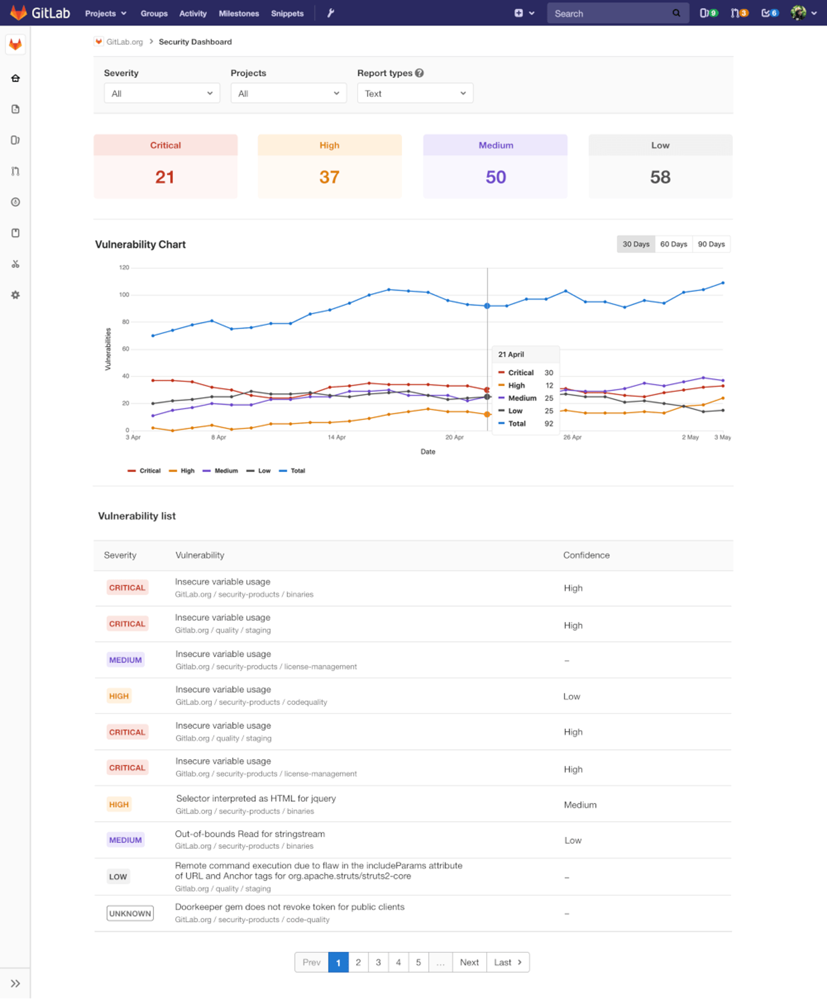
Service Description
The service, based on Gitlab, offers an integrated environment for the complete management of the software development lifecycle according to the DevSecOps approach and practices, providing the tools needed for collaboration, development, testing, security, and software release in a single integrated environment.
The service aims to support organizations in introducing application development, release, and management processes characterized by automation, security, and compliance, thus promoting the creation of reliable digital solutions aligned with required quality standards.
It allows you to manage projects and repositories, control source code versions, automate CI/CD pipelines, and collaborate efficiently with development teams.
The service is offered per user unit in the following options: 100 Users Ultimate/500 Users premium/2000 Free.
Features and Advantages
The service offers the following main features:
- Git repositories → represent the collection point for source code. They enable versioning, change tracking, and collaboration across multiple development teams.
- CI/CD pipeline → automation of build, test, and release phases. They reduce manual errors, speed delivery times, and ensure process repeatability.
- Security Integration (DevSecOps) → automatic scans of code (SAST), dependencies (SCA), container images, and infrastructure configurations. Early identification of vulnerabilities and tracking of remediation directly within development workflows.
- Artifact and Container Management → centralized storage of build artifacts and container images. Support for secure and controlled deployment across the various phases of the environment (development, testing, production).
- Monitoring and governance → dashboards to view code quality, security, and project status. Role-based access controls and integration with identity management systems to ensure compliance and accountability.
The main components of the service are:
- GitLab core platform → this is the core of the platform and encompasses its main features: a web interface, API, database, and team collaboration tools.
- Git repository → a service dedicated to managing Git repositories. It handles code versioning and timely tracking of all changes.
- CI/CD Engine GitLab Runner → a service responsible for executing CI/CD jobs defined within pipelines, automating build, test, and deployment processes.
- Artifact registry → a module dedicated to managing and archiving artifacts generated during CI/CD pipelines, such as packages, container images, and libraries. It ensures traceability, security, and reuse of software components.
- Test Management → a component that supports the structured management of testing activities, enabling the planning, execution, and monitoring of test cases to ensure software quality throughout the development lifecycle.
The service offers the following advantages:
- Reduced time to market → thanks to automation and integrated pipelines.
- Reduced operating costs → a single platform instead of multiple separate tools.
- Increased team productivity → thanks to centralized collaboration.
- High Return On Investment (ROI) → reduced rework and post-release remediation.
- Increased stakeholder trust → more secure code and faster releases.
- Native security integration → integrated DevSecOps capabilities. Ensures compliance with corporate and regulatory policies.
- Integrate project management with native tools (issue boards, milestones, etc.).
- Centralize source code and CI/CD pipeline management.
- Foster collaboration between technical and project teams.
- Increase team productivity through process automation.
Qualizer DevSecOps

Service Description
The Leonardo's Qualizer service is a platform designed to meet the needs for visibility, control, and continuous improvement of the software lifecycle throughout the development cycle, in accordance with the DevSecOps and Agile approach.
It offers a centralized tool for analyzing, observability, and governance of software quality.
The service allows you to aggregate data from various sources, security, monitoring, and testing tools, integrating them into a user dashboard (portal) that clearly and graphically displays various interactive metrics and insights.
The service is sized and offered per project unit. Each unit consists of 10 projects.
Features and Advantages
The service offers the following main features:
- Ingestion → automatically collects data from the main tools used in development processes, such as code management systems, continuous integration tools, and software quality and security analysis. The collected data is processed and made available for consultation and analysis.
- Data processing → processes the data collected by the ingestion module, normalizes it, and extracts key metrics. The data is structured and made highly accessible via dashboards.
- Project management → this module allows you to configure and organize projects within the service. It allows organizations to specify which products, pipelines, and tools they wish to monitor and associate useful information for navigation and management with each project.
- Analytics engine → the service provides summary and analytical views that aggregate the collected information and present it clearly and understandably (e.g., DevOps performance metrics; code security status; code quality; number of tests performed; percentage of tests passed).
- Presentation layer → data is made available through dashboards that allow for the analysis and continuous monitoring of key metrics.
The Qualizer service is cloud-native and based on a containerized microservices system. This architecture allows Qualizer to be flexible, resilient and secure, with the ability to adapt to different technological scenarios.
At a logical level, the architecture is divided into the following main components:
- Core modules → each service module (e.g., ingestion, project management, data processing) is implemented as an independent microservice, orchestrated in a Kubernetes/OpenShift environment to ensure high availability and functional isolation.
- Database for storing collected data → data acquired from external systems is stored in a centralized database, which is then processed and normalized to support efficient metrics processing, interactive consultation, and dashboard generation.
- Integration via REST API → the service interacts with external platforms through standard APIs, enabling continuous data collection.
- Messaging broker → the service uses a Kafka-based messaging system to ensure decoupling between modules, support high event loads, and facilitate horizontal scalability.
The service offers the following advantages:
- Reduced time to market → thanks to automation and integrated pipelines.
- Reduced operating costs → a single platform instead of multiple separate tools.
- Increased team productivity → thanks to collaboration between developers and security specialists, aligning objectives and timelines.
- High Return On Investment (ROI) → reduced rework and post-release remediation.
- Increased stakeholder trust → more secure code and faster releases.
- Centralized security management → vulnerabilities detected by various scanning tools are collected, normalized, and tracked in a single location, facilitating the work of security teams and reducing the risk of omissions.
- Reduced remediation time → thanks to immediate visibility of vulnerabilities, Qualizer accelerates the process of taking charge and resolving issues. - Continuous improvement based on collected metrics → through standardized dashboards and indicators, the service allows you to objectively measure team and project performance.
- Unified dashboard for quality, security, and deployment monitoring.
Big Data Family
Below is the list of services belonging to the Big Data family:
Data Lake
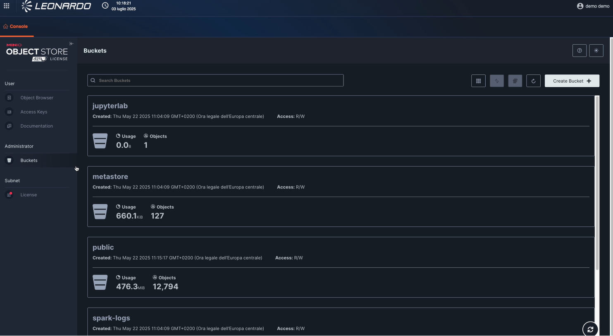
Service Description
Developed by Leonardo, it provides a ready-to-use platform that has all the features developers, data scientists, and analysts need to easily archive data of all sizes, shapes, and velocities.
It allows for the ingestion of a wide range of heterogeneous data sources (structured, semi-structured, and unstructured), from various internal and external sources within the organizations (relational databases, files, web applications, cloud, web services, etc.), and of various classification types.
It integrates with the Processing/ETL module for accessing data and metadata for the necessary processing or normalization, and with the Data Governance module for managing data access and managing data security and protection.
The service is sized and offered per storage unit. Each unit contains 1 TB.
Features and Advantages
Data Lake is the foundation for all Big Data services; without it, other services cannot be activated.
It was designed based on, and with full wire-protocol compatibility with, Amazon's renowned cloud storage product (Simple Storage Service). This enables the scalability needed to manage data volumes in the petabyte range (and beyond) typical of the Big Data world, while ensuring maximum interoperability and compatibility with languages, libraries, and products compatible with the S3 protocol.
Data Lake's capabilities are based on a horizontally scalable infrastructure, capable of supporting heavy read and write loads, ensuring consistent performance even in scenarios characterized by large amounts of data and intensive throughput.
The development technology is based on MinIO, an object storage solution fully compatible with the S3 protocol.
The application layer is built on distributed object storage, which in turn relies on an underlying block storage layer, which can be implemented either bare metal or using software-defined solutions.
The overall architecture is based on containers orchestrated by a resource manager based on an enterprise-class Kubernetes distribution.
The service offers the following advantages:
- Compliance and governance → supports versioning, auditing, encryption (AES-256), and integration with identity management systems.
- Flexibility and scalability → supports horizontal scalability; ideal for companies with rapidly growing data or multi-petabyte storage needs.
- Rapid time to market → allows you to quickly deploy new analytical applications or data pipelines without worrying about underlying management.
- Simplified management → teams don't need to worry about technical maintenance. There's no need to configure clusters, load balancers, manual replication, or complex monitoring; it offers native monitoring and alerting tools.
- Reduced operating costs → the service is built with open source standards and compatible with S3, thus reducing licensing costs compared to proprietary solutions.
- High availability and resilience → integrated replication and support for erasure coding ensure data resilience and business continuity.
- Optimized performance → designed for high-performance object storage, with high throughput and low latency. Ideal for real-time analytics and intensive ML/AI workloads.
- Interoperability → S3 API compatibility allows for easy integration of existing applications. Supports multi-protocol access.
- Automation and DevOps-friendly → it enables continuous updates without downtime and simplified backup management.
Disaster Recovery (DR) architecture
Data replication within MinIO Object Storage is managed directly at the application level.
The solution provides Site Replication capabilities that enable native management of data distributed across multiple Data Centers (DCs), synchronizing buckets, objects, access policies, and encryption configurations.
Typically, data availability and resilience in distributed object storage systems is achieved through deployment across multiple physical locations. In this architecture, MinIO clusters are deployed in geographically separate data centers to provide disaster recovery capabilities.
Replication between MinIO sites can be configured:
- as synchronous inside the same Region for HA configuration.
- as asynchronous beetween different Regions for DR configuration.
In this deployment, thanks to the high bandwidth and low latency connections available between data centers, synchronous Site Replication was adopted between clusters, ensuring data consistency across locations.
Access to the different clusters can be achieved either via direct addressing or through a load balancer, depending on architectural and operational needs.From an internal management perspective, MinIO automatically organizes storage units into erasure sets, which are logical groups that form the foundation of system availability and resilience.
To ensure uniform distribution, MinIO applies a striping mechanism for erasure sets across the various nodes in the pool, avoiding load concentrations or single points of failure. Objects are then divided into data blocks and parity blocks, which are distributed within the erasure sets, ensuring redundancy, fault tolerance, and operational continuity.
Data Platform Services
The Data Platform offering provides a modular platform for the governance, processing, and value extraction of Big Data assets stored within the enterprise Data Lake.
Designed to support data-driven organizations, the platform enables the governance, transformation, and consumption of large volumes of structured and unstructured data, ensuring quality, traceability, security, and control throughout the entire information lifecycle.
The Data Platform integrates with the Data Lake, which serves as the data collection and persistence layer, by providing the capabilities required for metadata management, data governance, batch and real-time processing, and data preparation for analytics, operational, and artificial intelligence use cases.
The platform is delivered as a set of complementary managed PaaS services that address both data governance and data processing requirements, enabling organizations to transform their data assets into trusted, governed, and actionable information.
The offering is composed of the following services:
- Data Governance Service → provides data cataloging, metadata management, data lineage, data quality controls, and governance capabilities to ensure compliance, discoverability, and effective management of data assets across the organization.
- PaaS ETL – Batch/Real-Time Processing Service → provides scalable data transformation, enrichment, and processing capabilities for both batch and streaming workloads, enabling the preparation of data for analytics, reporting, artificial intelligence, and business applications
Together, these services provide a comprehensive framework for governing and maximizing the value of enterprise data assets, ensuring that data stored within the Data Lake can be efficiently managed, processed, and consumed in a secure and compliant manner.
The following sections provide a detailed description of each service, outlining their features, capabilities, and benefits within the Data Platform ecosystem.
PaaS ETL - Batch/Real time Processing


Service Description
It is a platform that provides a set of tools for processing, integrating, quality-checking, and preparing data from heterogeneous sources stored in the Data Lake, both in real time and in batch mode.
It offers a user-friendly graphical interface for designing and implementing data integration workflows using a visual approach, following the ETL (Extract – Transform – Load) approach. This reduces the complexity of data integration and allows users to focus on business logic rather than programming code.
It supports a wide range of data sources, including relational databases, files, web applications, cloud, web services, and more. This makes it extremely flexible for data integration in a variety of contexts.
It also offers data quality management tools, allowing users to clean, standardize, and enrich their data to ensure its accuracy and reliability.
The service is sized and offered per worker node. Each worker consists of:
- 16vCPU
- 128 GB of RAM
Features and Advantages
The main features and functionalities of the service are:
- Heterogeneous and large-scale data processing → It supports a large number of data sources in batch and streaming mode (for example, datasets stored on HDFS, S3, ADLS Gen2, and GCS in CSV, Parquet, Avro, and other formats, as well as RDBMS via JDBC or all popular NoSQL, Apache Kafka, and more).
- It is natively integrated with the Data Lake and Batch/Real-Time Processing PaaS of the Big Data family.
- It allows to implement complex data pipelines → leveraging the parallel and distributed computing capacity provided by a Spark cluster.
- It provides an interactive mode to debug flows and explore data easily and intuitively.
- It guarantees the maximum scalability necessary to meet the needs of organizations of any size, from small businesses to large enterprises.
The main architectural components of the service are as follows:
- Visual ETL Architecture → provides various blocks that allow you to visually design an ETL, ELT, and ELL pipeline. It allows you to read, write, and modify data from different sources, interfacing with the Data Lake and Monitoring module, and can use the Processing module for data-intensive processing.
- Apache Spark → Open-source parallel processing framework that supports in-memory processing to improve the performance of applications that analyze Big Data.
- JupyterLab → Interactive notebook-based development environment designed primarily for working with data, scientific calculations, and machine learning. It supports writing and executing interactive code in languages such as Python, R, or Julia.
- NodeRed → Visual, low-code development environment for creating applications that connect devices, web services, APIs, and systems.
The service offers the following advantages:
- Support for data-driven strategies, faster and more informed decisions → centralized data for service customization (e.g., real-time analytics for marketing, IoT, e-commerce, etc.) and ready-to-use pipelines without complex development.
- Greater focus on core business → development and IT teams do not have to worry about technical maintenance, as it is managed. - Reduced operating costs and service scalability → no infrastructure to manage; support for large data volumes (batch) or continuous flows (streaming); automation of extraction, transformation, and loading processes with real-time scheduling or triggers; same framework for historical data and real-time flows.
- Integration with cloud ecosystem (data warehouse, data lake, BI, AI/ML).
- Guaranteed security and compliance (encryption, access, audit logs).
- Integrated monitoring → metrics, alerts, and centralized logging for ETL pipelines.
Data Governance


Service Description
A service developed by Leonardo that provides a platform with a single, secure, and centralized point of reference for data control. Leveraging search and discovery tools and connectors to extract metadata from any data source, it simplifies data protection, analysis, and pipeline management, as well as accelerating ETL processes.
It allows you to automatically analyze, profile, organize, link, and enrich all metadata, implement algorithms for automatic metadata and relationship extraction, and support regulatory and data privacy compliance with intelligent data lineage tracking and compliance monitoring.
It simplifies data search and access and verifies its validity before sharing it with other users.
It enables the production of data quality data (a measure of data condition based on factors such as accuracy, completeness, consistency, and reliability).
It allows you to oversee data error resolution efforts and maintain compliance with internal audits and external regulations.
It provides immediate support for the detection and classification of personal data and other sensitive data.
The service is sized and offered each 10 users.
Features and Advantages
The service offers the following main features:
- Data Search & Discovery → Automatic exploration of Data Lake datasets for (meta)data that can enrich or deepen knowledge of the information held.
- Data & Metadata Catalog → Extraction of information that makes the data searchable.
- Data Lineage → Tracking the entire data lifecycle, from source to destination.
- CL/Audit → Allows for robust granular data access permission management and auditing of data usage (this means being able to answer the question "Who accessed what data and when?" at any time).
The service use a tool of Data Hub that extends the concept of a data catalog by offering data discovery, data observability, and data governance functions.
It integrates natively with other architecture components, adding all the features that are particularly useful for achieving compliance objectives, such as privacy, security, and process quality management.
This tool allows you to verify changes made to data within the catalog over time, distinguishing the various sources that have populated the Data Lake, the type of data entered (personal data, financial data, etc.), and identifying data that is sensitive to specific laws or compliance procedures, whether internal or external to the organization.
Data integration within DataHub occurs primarily in two ways:
- PUSH → automatically within third-party applications such as Airflow, Apache Spark, Great Expectations, etc.
- PULL → manually by the developer prior to loading the data into the data lake via dedicated REST APIs.
The service offers the following advantages:
- Improved governance and compliance → Complete data traceability ("data lineage") to demonstrate compliance with GDPR, ISO, or industry regulations.
- Increased data trust → Certainty about the data's provenance, how it has been transformed, and how up-to-date it is.
- Reduced risks and operational costs → Fewer duplications, inconsistencies, and "orphaned" datasets. Reduced time wasted searching or validating data.
- Accelerating time to market → Easily discover and reuse existing datasets, reducing reliance on technical teams.
- Greater focus on core business → Teams no longer need to worry about technical maintenance.
- Centralized catalog and metadata → Provides an active data catalog with technical and operational metadata. Automatically integrate with Big Data systems (Kafka, Hive, Spark, Databricks, etc.).
- Automated Data Lineage → Automatically tracks end-to-end data flows from ingestion to transformations, all the way to consumption (dashboard, API, ML).
- Native APIs and integrations → Exposes APIs and plugins for continuous integration with orchestration, observability, quality, and security tools.
- Access and Security Policy Management → Centralizes access policies based on roles and classifications. Improves data security without fragmenting rules across services.
- Automation and Self-Service → Fosters a self-service data discovery model for data engineers and data scientists.
- Scalability and modern architecture → Microservices architecture and Metadata Graph.
Business Intelligence
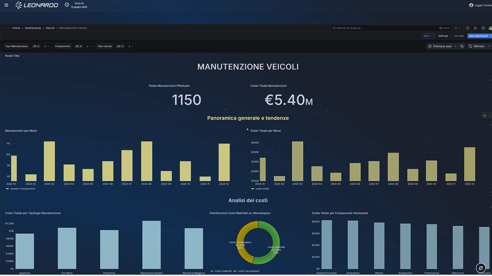
Service Description
Developed by Leonardo with Grafana technology, the Business Intelligence Service is a platform with an analytics environment designed to provide real-time, interactive data visualization and monitoring capabilities.
It centralizes data ingestion, transformation, storage, and dashboarding within a scalable service that eliminates the need for organizations to maintain on-premises analytics infrastructure.
Built on the Grafana visualization engine, the platform empowers users to explore metrics, logs, and business KPIs through intuitive dashboards while integrating seamlessly with diverse data sources across cloud and hybrid ecosystems.
The service is sized and offered per user unit. Each unit consists of 100 users.
Features and Advantages
The service offers the following main features:
- Unified Data Visualization – Provides dynamic, customizable dashboards that consolidate operational, financial, and business performance data from multiple sources.
- Multi-source Connectors – Supports native integration with SQL databases, time-series platforms, cloud storage, IoT systems, and third-party analytics services.
- Real-time Monitoring – Enables continuous tracking of business and operational metrics with live updates, alert rules, and automated notifications.
- Role-based Access Control (RBAC) – Ensures secure, granular access to dashboards, data, and administrative functions based on user roles and permissions. Advanced Querying and Exploration – Offers powerful query capabilities, including support for SQL, PromQL, InfluxQL, and other engine-specific languages.
- Alerts and Anomaly Detection – Provides rule-based alerts, thresholds, and pattern detection to identify anomalies or performance issues across business workflows.
- White-labeling and Custom Branding – Allows organizations to apply their own visual identity to dashboards, reports, and portal interfaces.
- API and Automation Support – Facilitates integration with third-party systems through APIs, webhooks, and automation workflows.
The main components of the service are:
- Visualization Layer – The dashboard engine that renders interactive charts, tables, alerts, and analytics views.
- Data Source Integration Layer – Connectors and plugins enabling ingestion from databases, cloud platforms, streaming services, logs, and monitoring tools.
- Data Processing Pipeline – Optional ETL/ELT engines for cleaning, transforming, and aggregating raw data prior to visualization.
- Time-Series and Analytical Storage – Managed storage solutions (e.g., Prometheus, Loki, InfluxDB, Elasticsearch, SQL warehouses) optimized for real-time queries.
- User and Access Management – Centralized identity integration with SSO, LDAP, OAuth2, or corporate IAM platforms
- Alerting and Notification Engine – Framework that triggers alerts via email, Slack, Teams, PagerDuty, or SMS based on metric conditions.
- Management and Administration Console – Web interface for configuring data sources, managing tenants, provisioning resources, and monitoring platform health.
- API Gateway – Provides programmatic access for provisioning dashboards, exporting data, managing alerts, and embedding visuals.
The service offers the following advantages:
- Faster and better decisions → real-time or near-real-time access to data, intuitive visualizations, and drill-down into information, enabling more informed decisions.
- Increased productivity and speed of insight → automated creation/reporting, self-service dashboards, and easy sharing enable business users to act faster.
- Reduced total cost of ownership (TCO) and lower costs → managed infrastructure and reduced need for on-premise infrastructure reduce overall costs.
- Increased collaboration and a data-driven culture → dashboard sharing, integration with other tools, and ease of use promote adoption among non-technical users.
- Access anywhere and from different devices → availability via cloud, mobile apps, and remote access allows users to work on the move or from different locations.
- Extensive data integration → support for numerous connectors to on-premise and cloud sources, enabling consolidation of disparate data.
- Efficient data preparation and modeling → integrated tools enable ETL, modeling, and complex calculations.
- Interactive and self-service visualization → intuitive, drag-and-drop interface and pre-built templates allow non-technical users to build reports independently.
- Security, governance, and compliance → Features such as encryption and auditing support access control and compliance. Infrastructure scalability and flexibility.
Event Message
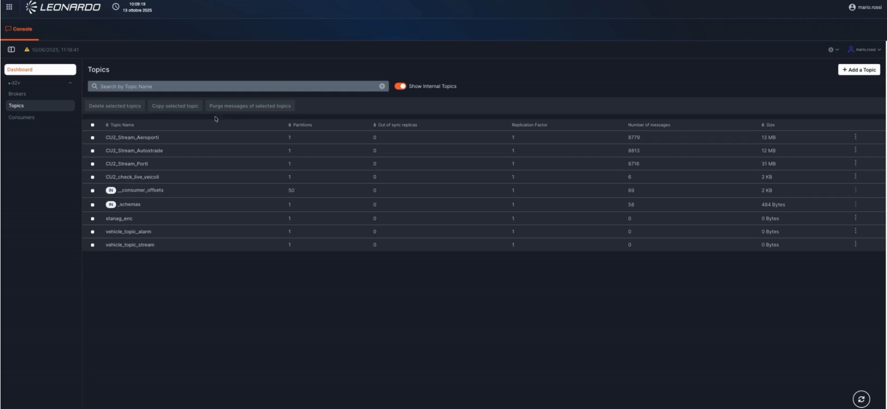
Service Description
It provides a platform developed by Leonardo using Kafka technology for developing real-time applications and data pipelines and acts as a message broker, providing publish-subscribe functionality.
It increases the scalability and resilience of existing applications by decoupling architectural components using a reactive approach based on asynchronous interactions.
The platform can scale horizontally and provide ordered message delivery capabilities. Like other Big Data PaaS modules, the solution is based on containerized resources orchestrated via Kubernetes.
It enables near-real-time analytical processes through streaming and facilitates the implementation of IoT use cases.
The service is sized and offered per worker node. Each worker consists of: - 16 vCPU - 128 GB of RAM
Features and Advantages
The service offers the following main features:
- A useful tool for implementing reliable data exchanges between different components.
- Ability to partition messaging workloads as application requirements change.
- Real-time streaming for data processing.
- Native support for data/message playback.
- Integration with the Batch/Stream Processing module.
- Web interface for monitoring: Brokers Topics/Messages, Consumers, ACLs.
The main components of the service are:
- Apache Kafka-based solution → publish-subscribe messaging platform built to manage real-time data exchange for streaming, distributed pipelining, and replay of data feeds for fast, scalable operations.
- Broker-based solution that operates by maintaining data streams as records within a cluster of servers.
- Topic → addressable abstraction used to show interest in a given data stream (series of records/messages).
- Partitions → topics can be divided into a series of order queues called partitions.
- Persistence → server clusters that durably maintain records/messages as they are published.
- Producers → defines which topic/partition a given record/message should be published to.
- Consumers → entities that process records/messages.
The service offers the following advantages:
- Faster time-to-market → New applications can be integrated rapidly via events, accelerating the development of new products and features.
- Greater agility → Facilitates the creation of modular and scalable services without major changes to the existing system.
- Reduced risk of operational failures → PaaS often includes SLAs, monitoring, backup, and redundancy, reducing the risk of downtime or data loss.
- Faster, more informed decisions → Real-time analytics for marketing, IoT, and e-commerce.
- Predictable costs → Reduces the risk of over-provisioning or unexpected maintenance costs.
- Scalability → Support for large event volumes without performance degradation
- High availability and fault tolerance
- Simplified management → No need to manage clusters, patches, software upgrades, or complex configurations
- Optimized Performance and Latency → Compression, batching, and automatic topic management improve performance
- Security and Compliance → Authentication, authorization, and encryption in transit and at rest are managed by the provider.
Artificial Intelligence (AI) Family
Below is the list of services belonging to the Artificial Intelligence (AI) family:
AI Platform services
The AI Platform offering provides a modular and scalable environment designed to enable organizations to adopt, manage, and operationalize AI capabilities across a wide range of business and operational use cases.
Built on a cloud-native architecture, the platform provides a set of complementary managed PaaS services that support the development, deployment, and consumption of AI-powered applications while ensuring security, governance, and operational efficiency.
The AI Platform is designed to accelerate the adoption of Generative AI and intelligent automation technologies, enabling organizations to leverage their data and knowledge assets through advanced search, language models, and AI-enabled tools.
The offering is composed of the following services:
- AI Search service → provides intelligent search and knowledge retrieval capabilities, enabling users and applications to discover, access, and interact with information distributed across enterprise data sources through semantic search and Retrieval-Augmented Generation (RAG) techniques.
- AI SLM service → provides access to Small Language Models (SLMs) optimized for enterprise use cases, delivering efficient, secure, and cost-effective natural language processing capabilities for inference, conversational AI, content generation, and domain-specific applications.
The following sections provide a detailed description of each service, outlining their features, capabilities, and benefits within the AI Platform ecosystem.
AI Search - RAG Service

Service Description
AI Search-RAG is a system developed by Leonardo for automatically generating answers to user-generated questions using context and information from reliable data sources. It can be integrated into environments requiring a virtual assistant capable of responding using reliable, contextualized information. The system generates answers by first searching for relevant information or passages from a reliable external knowledge base using AGENTIC RAG (Retrieval-Augmented Generation) techniques. This service allows for better contextualization of the search, further improving the quality and accuracy of the generated answers compared to traditional text-based RAGs. AI Search allows individuals and organizations to quickly access relevant, contextualized information through a simple and intuitive graphical interface built on a chat model, improving efficiency and productivity through advanced intelligent search tools.
The service is sized per GPU unit. Each unit consists of one NVIDIA H200 GPU.
Features and Advantages
The service offers the following main features:
- Activation of the Big Data PaaS Data Lake service → to meet object storage needs.
- Use of appropriately optimized Large Language Models and Embeddings → to provide value to specific contexts and for specific users.
- User authentication → integrates with existing security protocols. Understands natural language → provides coherent and complete answers, retrieving multimodal information from knowledge expressed as text and audio. Supports multilingual models
- Feedback collection → after a query is resolved, AI Search collects user feedback
- Document segmentation by user
The main components of the service are:
- Model Repository → at a minimum, a virtual assistant and an embedding model are required.
- Vector Database and Search Engine → it uses a vector database that stores vector representations (embeddings) of the input data, allowing documents and information to be retrieved based on their meaning (semantic search). It also uses a traditional search engine (lexical search) that operates on text and metadata, performing searches based on keywords and structured criteria (e.g., BM25, FT-IDF).
-
Document Manager → responsible for retrieving documentation from a specific repository and indexing it in the vector database for use in user queries.
AI Search is composed of three layers: -
Data layer → represents the database and the primary source of information.
- Analysis layer → responsible for all processing, analysis, and generation of answers to user queries. It includes the Retriever and the Generator, responsible for retrieving the most relevant information and creating coherent and personalized responses, respectively.
- User layer → interface through which the user interacts directly with the service, offering the ability to query the knowledge base, view answers with referenced sources, manage documents, and provide feedback.
The service offers the following advantages:
- Access to up-to-date knowledge → answers always based on the most recent internal and external documents.
- Reduced operational costs → less time spent on manual searches and repetitive support.
- Improved customer/employee experience → relevant, clear, personalized answers.
- Increased competitiveness → leverages proprietary knowledge, not just public knowledge.
- Risk mitigation → reduces errors and hallucinations, increasing the relevance of output to user questions.
- Upgradability without retraining → simply update the database/document repository, not the LLM.
- Hybrid vector search → combines semantic search with traditional text search.
- Model efficiency → LLM-based host model oversees activities and decisions and supervises other, simpler agents (LLM).
- Traceability and transparency → sources cited to support the answer can be displayed.
- Bias reduction → thanks to the indexing of the text on a vector DB, the LLM conductor will receive as input a context relevant to the questions asked by the users.
AI SLM service


Services Description
The AI SLM Service is a Generative AI Platform-as-a-Service (PaaS) developed by Leonardo that provides optimized natural language processing and inference capabilities through the use of Small Language Models (SLMs).
Designed for enterprise and public administration environments, the service enables organizations to integrate Generative AI capabilities into their applications and business processes while maintaining control over resource consumption, performance, and operational costs.
SLMs are lightweight and efficient language models optimized for domain-specific use cases, offering fast and accurate responses for targeted natural language tasks such as text classification, content generation, summarization, information extraction, conversational assistants, and workflow automation.
The service is particularly suitable for organizations seeking to deploy AI-powered applications without the complexity and computational requirements typically associated with larger language models.
The service is sized per GPU unit; each AI SLM Service unit consists of one partition of an NVIDIA H200 GPU.
Features and Advantages
The service offers the following main features:
- Tenant isolation → each customer is provided with a dedicated tenant within the customer infrastructure, ensuring complete isolation of data, configurations, and deployed models.
- Resource allocation → dedicated infrastructure resources (CPU, GPU, RAM, and Storage) are assigned to each tenant and sized according to workload requirements.
- Auto-scaling → tenant resources can automatically scale in response to workload variations, ensuring service continuity and performance optimization.
- Cloud-native deployment → the service is deployed within the customer tenant in cloud-native mode on the OpenShift platform, ensuring portability, resilience, and standardized operational procedures.
- Centralized observability → provides centralized monitoring capabilities, including log collection, metrics, and alerting, enabling complete observability, auditing, and advanced troubleshooting.
- PaaS integration → leverages platform services for storage, networking, security, and identity management, ensuring compliance with project requirements while benefiting from shared infrastructure services.
The service features a modular architecture designed to ensure scalability, workload segregation, and seamless integration into enterprise and public administration processes.
- API Layer → provides access to SLM capabilities through REST APIs for integration with existing systems or through a web-based user interface for direct interaction.
- Inference Layer → the core component of the service, where Small Language Models are deployed and executed. It includes:
- Inference Engine → executes language models optimized for low latency, resource efficiency, and predictable performance.
- Model Pool Management → maintains a catalog of validated and pre-configured SLMs that can be selected according to specific business requirements. Only one model is active per tenant at any given time.
- Platform Layer → provides cross-functional platform services, including:
- Resource Management & Scaling → dynamic allocation of computational resources (CPU, GPU, RAM, and storage), load-based auto-scaling, and service lifecycle management.
The service offers the following advantages:
- Technological accessibility → enables access to Generative AI capabilities through intuitive interfaces and simplified integration mechanisms.
- Reduced operational costs → eliminates the need for investments in dedicated AI infrastructure and complex model management activities.
- Faster time-to-market → accelerates the adoption of AI-powered solutions through pre-configured and validated language models.
- Operational efficiency → automates repetitive tasks, reducing processing times and improving service quality.
- Specialized AI capabilities → provides lightweight and domain-focused language models optimized for specific business and operational use cases.
- Risk mitigation → leverages validated and pre-trained models without requiring advanced machine learning expertise.
- Easy integration with existing systems → supports integration through APIs, microservices, and enterprise workflows.
- Resource efficiency → optimized infrastructure utilization enables predictable costs and efficient consumption of computational resources.
- Fast and simplified model testing → ready-to-use models can be evaluated through integrated playground capabilities available directly from the service interface.
- Rapid prototyping and AI DevOps → provides a ready-to-use environment for developing, testing, and deploying AI-powered applications through standard interfaces and deployment workflows.
Database Family
Below is the list of services belonging to the Database family:
PaaS SQL - PostgreSQL
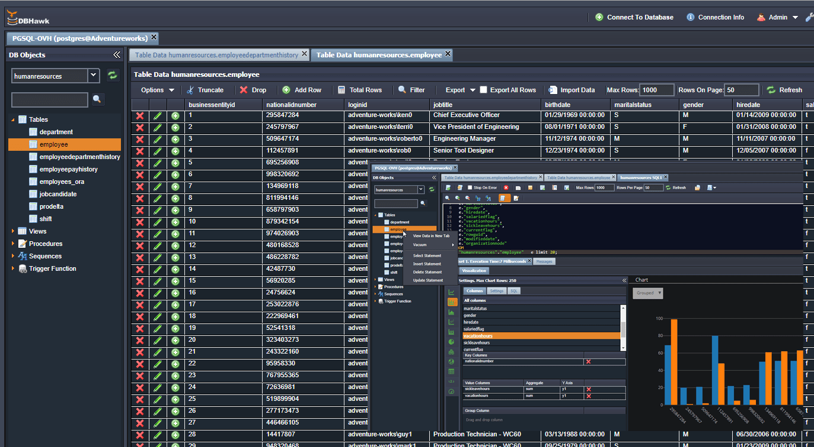
Service Description
The PaaS SQL – PostgreSQL is a cloud-based managed platform that provides ready-to-use PostgreSQL database instances without requiring the user to install, configure, or maintain the underlying infrastructure.
In essence, it delivers PostgreSQL “as a service”, allowing developers and organizations to focus on application development and data management instead of database administration.
PostgreSQL in a highly available configuration is a reliable solution for organizations seeking an open source database with performance, security, and scalability. This service is ideal for applications that require reliability without the costs of commercial database solutions.
The service could be used to:
- Host and manage relational databases in the cloud.
- Store and query structured data efficiently.
- Support applications that need high availability, scalability, and data integrity.
- Simplify DevOps workflows by automating database management tasks.
- Integrate easily with other cloud services (analytics, AI, APIs, etc.).
The service is offered per DB instance. Each instance with replication consists of:
- 4 vCPUs
- 16 GB of RAM
Features and Advantages
The service offers the following main features:
- Fully managed service → semplify provisioning, configuration, patching, and upgrades.
- Scalability → vertical and horizontal scaling of compute and storage resources as needed.
- High availability and reliability → built-in replication, automatic failover, and multi-zone deployment options.
- Backup and recovery → automated backups, point-in-time restore, and disaster recovery capabilities.
- Security and compliance → data encryption (in transit and at rest), identity and access management (IAM), network isolation (VPC/Private Link), and compliance certifications (e.g., GDPR, ISO, SOC).
- Performance optimization → query optimization, connection pooling, caching, and monitoring tools.
- Monitoring and alerting → integration with dashboards and metrics (CPU, memory, I/O, query performance). Integration and extensibility → compatible with PostgreSQL extensions (e.g., PostGIS, pg_partman, pg_stat_statements). API and CLI tools for management and automation.
The main components of the service are:
- Control Plane → it is the part of the service that manages the lifecycle and orchestration of database instance. Composed by: API, provisioning, configuration, monitoring
- Data Plane → it is the layer where PostgreSQL instances actually run. Each instance can be isolated in a VM, container, or pod, depending on the implementation
- HA & Resilience → it ensures that the service remains available even in the event of hardware or software failures. It implements replications, failovers and backups policies.
- Security layer → it ensures data protection and access control for respecting of the protection & compliance policies: authN/AuthZ, encryption, firewalls, auditing
- Observability Layer → It provides visibility and continuous management of the service, offrering monitoring & operations like metrics, logging, auto-patching.
The service offers the following advantages:
- Cost Efficiency → no hardware or infrastructure investment. Reduced operational costs: no need for DBA teams to handle maintenance, patching, or scaling manually.
- Faster Time-to-Market → database instances can be provisioned quickly through a web interface or API. Ideal for rapid development, prototyping, and product launches. Reduces dependency on infrastructure provisioning cycles.
- Business agility and scalability → elastic scaling of resources (CPU, RAM, storage) without downtime. Easily adapts to varying workloads and seasonal demand. Enables agile business models, including microservices and cloud-native architectures.
- Increased reliability and availability → High Availability (HA) and automated failover mechanisms ensure continuous uptime. Built-in replication and backup policies protect against data loss. Improves business continuity and reduces downtime risk.
- Focus on Core Business → the organization focuses on application development and innovation, not on database administration. Simplifies the technology stack and reduces management overhead.
- Compliance and Risk Reduction → the service provider ensures security, patching, and compliance with standards. Reduces risk of configuration errors or unpatched vulnerabilities.
- Standardization and portability → based on open-source PostgreSQL, ensuring compatibility and avoiding vendor lock-in. Databases can be exported or migrated easily to other PostgreSQL environments. Supports extensions and features like PostGIS, JSONB, and logical replication.
PaaS In Memory- Redis
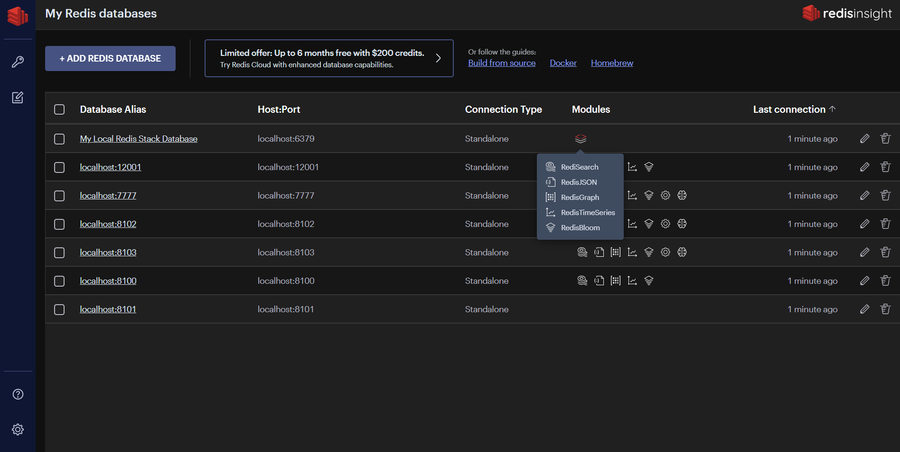
Service Description
It is a PaaS DB based on Redis technology (Remote Dictionary Server) that exposes a high-performance in-memory database, primarily used as a cache and database for web and real-time applications.
Redis is a widely used database due to its flexibility and ability to handle a wide range of data types with low latency.
The service delivers sub-millisecond data access, advanced caching, session management, message streaming, and data persistence capabilities.
As a Platform-as-a-Service (PaaS) offering, it abstracts away the operational complexity of managing Redis clusters — including provisioning, scaling, patching, failover, and monitoring — while ensuring enterprise-grade reliability, security, and performance.
The PaaS Redis service is designed for applications that require extremely fast data access, real-time analytics, and low-latency transactions. Typical use cases include:
- Application caching to reduce latency and offload backend databases.
- Session storage for web and mobile applications.
- Real-time analytics and leaderboards (e.g., gaming, ad tech, telemetry).
- Message queues and event streaming for distributed systems.
- Geospatial data processing and time-series data handling.
- Rate limiting and token management in API gateways.
The service is offered per DB instance. Each instance consists of:
- 4 vCPUs
- 16 GB of RAM
Features and Advantages
The main features of the Paas In Memory Redis are:
- In-memory → data is stored in RAM, ensurig extremely fast access;
- Persistence → supports data persistence on disk, preventing data loss in the event of a system reboot;
- Data type → variety of data types, allowing for modeling different types of information;
- Pub/Sub → supports the publish/subscribe model for real-time communication between applications.
- Fully managed platform → managing of provisioning, patching, scaling, and maintenance. High availability clusters with zero-downtime updates. Self-healing orchestration to ensure continuous service delivery. Management via API, CLI, or Web Console.
- High performance and low latency → entire dataset stored in-memory for sub-millisecond access. Optimized for real-time operations requiring microsecond response times. Supports high throughput (millions of operations per second). Persistent storage optional for durability.
- Flexible data structures → rich data model beyond simple key-value pairs: strings, hashes, lists, sets, sorted sets. Bitmaps, HyperLogLogs, Streams, and Geospatial Indexes. Ideal for complex operations such as counters, queues, and pub/sub messaging.
- High Availability and disaster recovery → native Redis Sentinel or Cluster Mode for automatic failover and fault tolerance. Multi-AZ deployment to ensure continuous uptime. Backup and restore capabilities for data persistence and recovery. Optional geo-replication across regions for disaster recovery.
- Persistence options → RDB (Redis Database Backup): Snapshot-based persistence for periodic backups. AOF (Append-Only File): Logs every operation for durability and recovery. Hybrid mode combining both mechanisms for balance between speed and reliability.
- Scalability and elasticity → horizontal scaling through Redis Cluster sharding. Vertical scaling with dynamic memory and compute adjustments. Linear scalability for both read and write operations. Automatic rebalancing of data across nodes.
- Security and compliance → encryption in transit (TLS) and encryption at rest. Role-Based Access Control (RBAC) and user authentication. Integration with Identity and Access Management (IAM) systems. Continuous auditing, logging, and compliance monitoring.
- Monitoring and observability → real-time metrics on throughput, latency, and memory usage. Proactive alerts and anomaly detection. Integration with monitoring stacks (Prometheus, Grafana, ELK). Logging for audit trails and performance tuning.
- Developer Integration and APIs → compatible with standard Redis clients and libraries. REST and gRPC APIs for automation and DevOps workflows. Integration with CI/CD pipelines and Infrastructure-as-Code tools (Terraform, Ansible). Supports Redis modules (e.g., RedisJSON, RediSearch, RedisGraph, RedisTimeSeries).
The logical architecture of the PaaS Redis service consists of multiple layers designed for automation, scalability, and resilience.
- Control plane → responsible for service orchestration, cluster provisioning, scaling, and lifecycle management. Manages authentication, authorization, metering, and billing. Provides APIs, CLI, and web-based UI for service management.
- Data Plane (Redis cluster layer) → Core component that hosts user data in memory. Composed of multiple Redis instances organized as: Master nodes; Replica nodes; Implements sharding for horizontal scalability; Ensures high throughput and low latency for data operations.
- Storage and persistence layer → provides optional durable storage for backup and disaster recovery. Utilizes RDB snapshots and AOF logs stored on encrypted block or object storage. Supports automated retention policies and scheduled backups.
- Networking and security layer → virtual network isolation using VPC/VNet configurations. TLS-based encryption for client-to-server and inter-node communication. Security groups, IP whitelisting, and firewall rules for controlled access. Optional private endpoints for secure integration with internal systems.
- Monitoring and Management layer → aggregates telemetry and performance metrics. Implements logging, tracing, and alerting via monitoring systems. Provides dashboards for capacity planning and SLA tracking.
- High availability and failover layer → monitors node health and automatically triggers failover in case of node or zone failure. Uses Redis Sentinel or internal control mechanisms for cluster coordination. Supports synchronous or asynchronous replication for HA and DR.
The service offers the following advantages:
- Reduced Total Cost of Ownership (TCO) → no capital investment in hardware, software, or cluster management. Reduces operational overhead by automating deployment, scaling, and maintenance. Eliminates the need for specialized in-house Redis administration skills.
- Faster Time-to-Market → instant provisioning of Redis clusters enables rapid development and testing. Ready-to-use configurations optimize caching and real-time processing use cases. Enables teams to integrate low-latency data layers into applications in minutes. Accelerates delivery of digital services requiring immediate responsiveness.
- Improved application performance and user experience → sub-millisecond response times improve customer satisfaction and engagement. Reduces load on backend databases and APIs through caching and data offloading. Ensures consistent performance during traffic spikes or seasonal demand peaks.
- Business agility and scalability → easily scales up or down to accommodate fluctuating workloads. Enables dynamic adaptation to new business requirements without architectural redesign. Supports real-time analytics and streaming for modern, data-intensive applications.
- Reliability and continuity → built-in replication and failover mechanisms ensure continuous availability. Automated backups and geo-redundancy support robust disaster recovery. Meets enterprise-grade SLA commitments for uptime and data durability.
- Compliance and security → provider-managed encryption, patching, and access control ensure compliance with data security standards. Role-based access and network isolation protect sensitive data in-memory and at rest. Reduces compliance risks through centralized governance and auditing tools.
- Focus on core business innovation → frees developers and operations teams from managing infrastructure and cluster administration. Allows organizations to focus on value creation, product innovation, and user experience. Enables integration of Redis-based caching and real-time logic into cloud-native architectures effortlessly.
Networking Family
Below is the list of services belonging to the Networking family:
PaaS DNS (Domain Name System)

Service Description
The PaaS DNS service is a fully managed, cloud-native solution that provides internal and external Domain Name System (DNS) resolution within the customer’s Virtual Network (VNET). It is designed for high availability, automated scalability, and integrated security, enabling seamless management of DNS names for dynamic workloads.
Key characteristics include:
- A self-contained DNS resolver based on OPNsense, acting as the authoritative DNS point for the VNET.
- Internal name resolution for virtual machines, containers, and cloud services.
- Secure forwarding of DNS queries to external resolvers with DNSSEC support.
- Automated provisioning that covers instance deployment, zone configuration, and dynamic record management, fully compatible with DevOps pipelines via REST APIs.
- Continuous security patching and updates applied automatically without user intervention, ensuring protection against known vulnerabilities.
The service also supports protocol-level traffic handling, primarily DNS over TCP and UDP, with underlying network infrastructure supporting ICMP for connectivity diagnostics.
Features and Advantages
The main features of the service are:
- Cloud-managed OPNsense firewall instances → fully managed virtual appliances with automated updates, monitoring, and lifecycle management.
- Zero-Trust network access → policy-based access management for users and devices, enabling secure remote connectivity.
- High Availability & scalability → cluster configurations, automated failover and elastic capacity provisioning.
- Centralized configuration & orchestration → unified control panel for managing rules, VPNs, routing, and monitoring across multiple nodes.
- Multi-tenant architecture → logical separation of environments for partners, business units or customers.
- Full API integration → REST API support for automation, CI/CD pipelines and infrastructure-as-code workflows.
The main components of the service are:
- OPNsense core platform → the foundational DNS and security engine, providing routing, filtering, and advanced security modules.
- Management & orchestration layer → a cloud-native platform that automates provisioning, configuration, monitoring, and scaling of OPNsense nodes.
The service offers the following advantages:
- Reduced operational ocmplexity → eliminates the need to manage firewall hardware, updates, and maintenance in-house.
- Lower total cost of ownership (TCO) → subscription-based model removes CAPEX and ensures predictble cost planning.
- Accelerated time-to-value → rapid deployment and standardized configurations shorten rollout cycles.
- Improved security posture → centralized policy enforcement and continuous updates reduce exposure to threats.
- Flexibility for business growth → easily add new sites, users, or workloads without re-architecting the network.
- Consistent and automated ocnfiguration → reduces human error and ensures uniform security across the organization.
- API-first approach → smooth integration with DevOps pipelines and automated deployment systems.
- Vendor neutral and open source–absed → avoids vendor lock-in while benefiting from the transparency and flexibility of OPNsense.
Deployment in customer VNET
The DNS service is deployed as a virtual appliance within the customer’s VNET.
It acts as the authoritative resolver for internal workloads while forwarding queries for external domains to upstream DNS servers. This ensures a single DNS endpoint for all workloads in the VNET, simplifying configuration and management.
Internal and external resolution
- Internal Resolution: the OPNsense DNS Resolver (Unbound) can be configured with local zones and host overrides. Workloads in the VNET can register their names dynamically, enabling seamless resolution of private IP addresses.
- External Resolution: queries for domains outside the VNET are forwarded to upstream DNS servers (e.g., ISP or public resolvers). Supports DNSSEC validation for secure external lookups.
Dynamic updates
The service supports dynamic DNS updates from workloads in the account, which can automatically register or update their DNS records in the OPNsense DNS Resolver.
This ensures that newly deployed or scaled workloads are immediately reachable by name without manual intervention.
Dynamic updates are authenticated using secure mechanisms (TSIG keys), preventing unauthorized changes.
Dynamic Updates Flow
- Workload acquires IP address
- a VM, container, or host in the customer VNET requests an IP lease from DHCP
- DHCP assigns lease
- DNS update request (RFC2136)
- The DHCP service or workload sends a signed update message to the OPNsense DNS Resolver (Unbound).
- Authentication is handled via TSIG keys to ensure only authorized clients can modify records.
- Unbound DNS updates zone records
- The resolver updates its local zone or forwards the update to an authoritative DNS server, and the A/AAAA records are updated with the new IP address.
- Clients can resolve the updated names
- Other workloads in the VNET query the OPNsense DNS service.
- The resolver returns the updated IP address, ensuring connectivity.

{kind=link}
{kind=link}
{kind=link}
{kind=link}
{kind=link}
{kind=link}
{kind=link}
{kind=link}
{kind=link}
{kind=link}
{kind=link}
Cloud connected Service
Service Description
The PaaS Cloud interconnect gold SW service provides a high-quality, software-defined, private connectivity between a customer’s on-premises infrastructure (or external data centers) and the Aruba cloud environment.
It offers dedicated bandwidth tiers, enhanced SLA guarantees, secure routing, and enterprise-grade performance, enabling customers to build hybrid or multi-cloud architectures without deploying physical network appliances or managing complex routing setups.
The “Gold” tier represents the highest level of availability, performance, and support, while the “SW” component refers to software-based interconnect provisioning, ensuring flexibility, fast activation, and seamless scalability.
This service, delivered via hardware or software, is designed to simplify customer application migration with minimal impact on users and workloads.
It enables granularity down to the individual IP address during migration, increasing security and minimizing rollback times, if necessary.
The service is offered with the following unit metric: 10 Gbps of throughput.
Features and Advantages
The main features of the service are:
- Private and secure network connectivity → ensures a private, non-public connection between customer networks and cloud resources. Traffic does not traverse the public Internet, reducing risk and improving performance. Ideal for workloads requiring compliance, isolation, or predictable latency. - Software-defined provisioning (SW) → fully software-based interconnect setup with no physical circuits required.On-demand provisioning via web console or API. Rapid activation (minutes instead of days or weeks). Flexible reconfiguration without service interruption.
- High SLA & guaranteed bandwidth (Gold tier) → provides defined bandwidth tiers with guaranteed throughput. Includes enhanced SLA for: availability, packet loss, latency, jitter. Suitable for mission-critical enterprise applications.
- Multi-site and multi-zone connectivity → supports connectivity to multiple Aruba regions or availability zones. Enables redundant hybrid cloud architectures. Facilitates interconnection of distributed workloads.
- Routing integration → supports dynamic routing (BGP) or static routing. Automatically adapts to network topology changes. Enables flexible hybrid cloud traffic engineering.
- Segmentation and isolation → allows creation of multiple isolated virtual circuits or VLANs. Ideal for separating environments: production, staging, development, partner networks
- End-to-end encryption → traffic can be encrypted at the network edge using IPsec or provider-managed encryption. Ensures compliance with data protection standards.
- Monitoring, logs, and telemetry → real-time monitoring of: bandwidth usage, packet loss and latency, connection health. Exportable logs for SIEM and analytics systems.
- No Physical hardware required → provider manages the entire connectivity layer. No need for physical circuits, routers, or carrier contracts. Reduces complexity and deployment time.
The main components of the service are:
- Software-defined interconnect fabric → centralized SDN layer orchestrating virtual connections. Provides flexible, scalable, multi-tenant connectivity. Allows rapid deployment and reconfiguration.
- Regional interconnect gateways → high-availability routing gateways located in Aruba cloud regions. Serve as entry/exit points for private customer traffic. Architected for redundancy and failover.
- Cloud backbone network → high-capacity fiber backbone interconnecting Aruba data centers. Ensures low-latency east-west traffic across regions. Supports both primary and backup routes.
- Security & isolation layer → strict tenant isolation enforced at: network virtualization layer, routing control plane, traffic segmentation policies. Ensures no cross-tenant visibility.
- Control plane → It manages: provisioning of interconnects, routing updates, bandwidth allocation, policy enforcement. Exposed through UI and APIs.
- Data plane → handles the actual traffic flow with: guaranteed QoS, deterministic routing, optimized latency paths. Decoupled from monitoring and control tasks.
- Monitoring & observability layer → aggregates telemetry from gateways and SDN controllers. Provides dashboards and alerting for performance and reliability.
The service offers the following advantages:
- Enhanced security → private connection avoids exposure to the public Internet. Supports encrypted tunnels and isolated routing domains.
- Predictable and high performance → guaranteed bandwidth and low latency. Stable connectivity ideal for enterprise workloads.
- Rapid deployment → software-defined provisioning reduces setup from weeks to minutes. No physical circuits or carrier coordination required.
- High availability and reliability (Gold SLA) → redundant gateways, paths, and failover mechanisms built in. Suitable for mission-critical connectivity.
- Cost efficiency → eliminates the need for physical interconnects or MPLS lines.
- Improved hybrid cloud architecture → seamlessly integrates on-prem infrastructure with cloud workloads. Supports migration, DR, and inter-site communication.
- Scalability on demand → quickly adjust bandwidth tiers or add new interconnects. Ideal for growing or fluctuating workloads.
- Simplified network operations → centralized management via API/portal. Automated routing and monitoring reduce operational overhead.
- Better compliance and data governance → private, regional connectivity supports regulatory requirements. Data paths remain under predictable network control.
- Optimized application experience → reduced jitter and packet loss improve performance for: databases, real-time apps, VoIP/UC, latency-sensitive services.